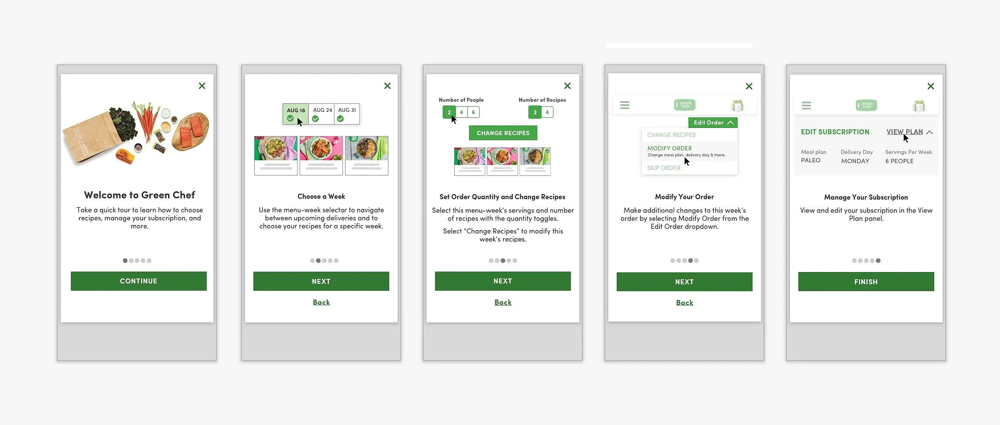
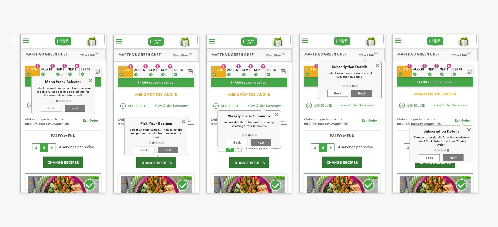
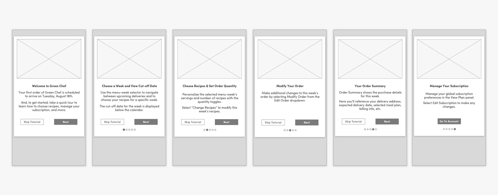
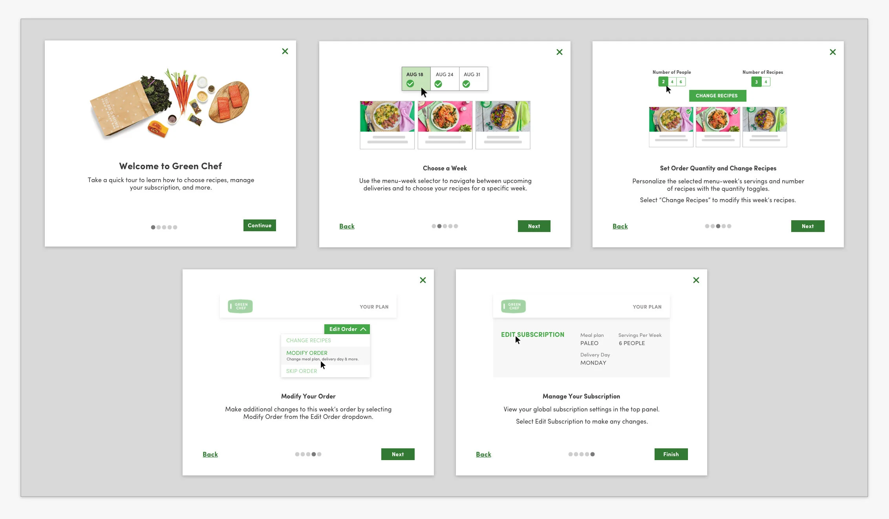
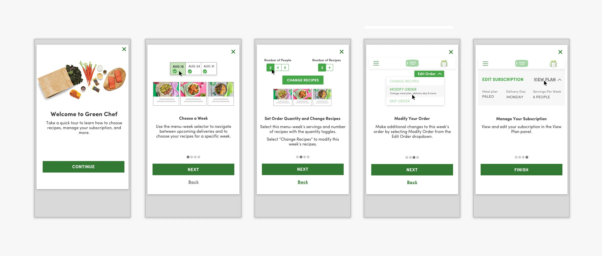

Onboarding redesign
New Green Chef subscribers were cancelling before they placed their first order. Over two weeks I looked into why and tested a coach marks tutorial, which didn't hold up in usability testing. I switched to a carousel instead, and after it shipped, retention went up 13% and NPS rose 15 points.

Fig 01. Five-step carousel onboarding flow across mobile and desktop
Green Chef is a meal kit service built around diet-specific recipes like keto, paleo, vegan and vegetarian. Subscribers handle almost everything from their account page, including weekly menus, delivery dates, skipped weeks and subscription settings.
New customers weren't using it. Survey answers from sign-up and from cancellation pointed to the same problem: people couldn't figure out how to manage their account or finish their first order. The page was cluttered, the navigation was hard to follow, and important features were buried. Competitors made it easier to go from signing up to placing an order.
A full redesign of the account page was already on the roadmap, but it was months away. The team needed something that could ship within a few weeks inside the existing interface.
I looked at survey data from new and recently subscribed customers, including the questions they asked during sign-up, what they expected from the subscription, and why they cancelled.
Both sets of answers lined up. People were leaving for reasons that had nothing to do with the food, and the features that confused them at sign-up were the same ones behind cancellations a few weeks later.
Top Reasons to Cancel
Fig 02. Top cancellation reasons from exit survey data
Top Sign-Up Questions
Fig 03. Most frequently asked questions during sign-up
I ran card sorts with active subscribers to see which account features mattered most to them. The results decided which features the tutorial covered first.
Priority 1
Choosing this week's and next week's menus, and changing the delivery date. Every participant put these first.
Priority 2
Reviewing pricing, setting dietary preferences and contacting Customer Care. These are about the subscription itself, beyond the weekly menu.
Priority 3
Recipe cards, skipping a week and referral rewards. Subscribers used these, but they weren't why people cancelled.

Primary Persona
Everly
35 · Working Professional
Household Income
$110,000
Education
Bachelor's Degree
Cooks for Family
4× per week
"Health and nutrition are important to me and my family. Balancing my busy career and taking care of my family are my main priorities."
Fig 04. Primary persona: Everly, 35 years old, $110K household income, cooks dinner for family four times per week
Everly is busy with work and family, so I kept the tutorial short and the copy brief.
The research pointed to a short onboarding tutorial covering the features most tied to placing a first order and staying subscribed: choosing meals, managing delivery and editing the subscription. It wasn't meant to cover the whole account page or stand in for the redesign that was coming later.
In Scope
Walk first-time subscribers through the features that decide whether they place a first order and stay subscribed. It had to work inside the existing interface, so engineering didn't have to rebuild anything.
Out of Scope
Tutorials for every feature, the full customer journey and a separate review onboarding feature were left out. Keeping the scope narrow is what made two weeks realistic.
There was a chance the tutorial could backfire. If it felt slow or mandatory, it could frustrate people enough to cancel before they ever reached the account page.
I started with coach marks, which are tooltip overlays that highlight parts of the interface one at a time and explain each one. They're a common way to onboard people to an existing interface without rebuilding it.
In usability testing, they didn't work here. The overlays covered the content they were explaining, and people had to keep too much in mind at once. The page was harder to use with the tutorial than without it.
I wrote up what went wrong and started on a different approach.

Fig 05. Coach marks approach: five tooltip steps overlaid on the existing account interface
Instead of explaining things on top of a cluttered page, the carousel covers one idea per screen before the subscriber gets to their account.
I also cut the copy down, reduced the number of steps, and removed a cut-off date in the first step that was confusing people. Every screen works on mobile and desktop, and the final version has five steps.
Step 1
Tells the subscriber what the next few screens cover, so the steps that follow make sense.
Step 2
Choosing a week was the first thing most people got wrong on their own, so it gets its own screen before they see the account page.
Step 3
This is the main part of placing an order. The screen shows what the interface looks like when it's filled in correctly.
Step 4
How to change an order after placing it. This came up a lot in the cancellation survey, because people couldn't find it when they needed it.
Step 5
Skipping a week, changing frequency and updating dietary preferences. These came up most in sign-up questions, and they're what let subscribers feel in control of their plan.

Fig 06. Carousel model after pivot: five steps across mobile and desktop

Fig 07. Final high-fidelity carousel onboarding, desktop

Fig 08. Final high-fidelity carousel onboarding, mobile

First-order completion went up after launch, and Green Chef used the same carousel approach for later onboarding work across the platform.
Coach marks seemed like the right call until testing showed otherwise. Changing direction partway through a two-week project didn't leave much room, but the first version made the problem clear. People needed to understand the concepts before they saw the account page.
Testing made the failure easy to see, since people struggled more with the tutorial than without it. Once that was clear, moving the explanations onto their own screens was the natural next thing to try.
Next time I'd test earlier. A rough prototype of both approaches in the first few days would have shown the coach marks problem before I committed to full wireframes, and left more time to refine the carousel and try a few versions of it.